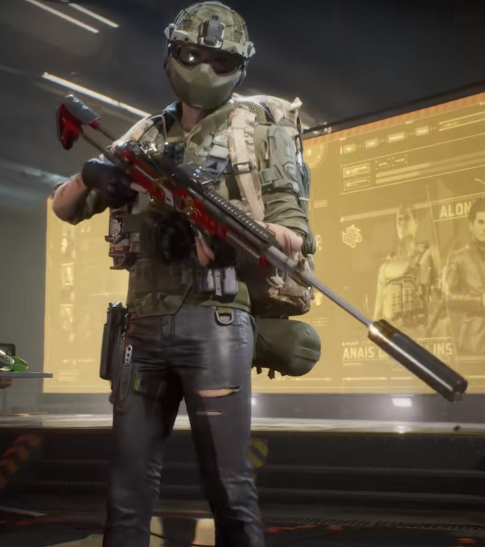
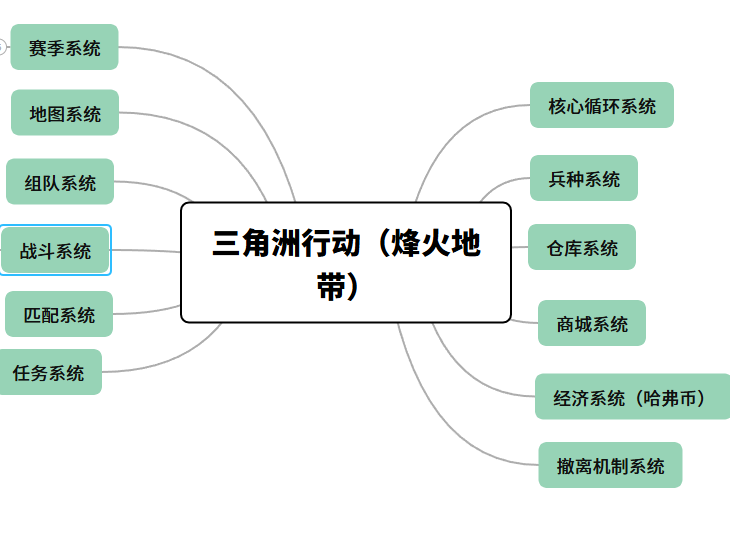
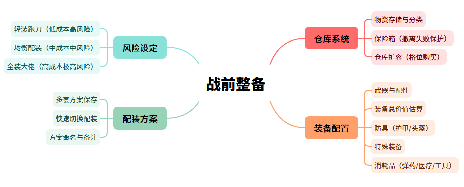
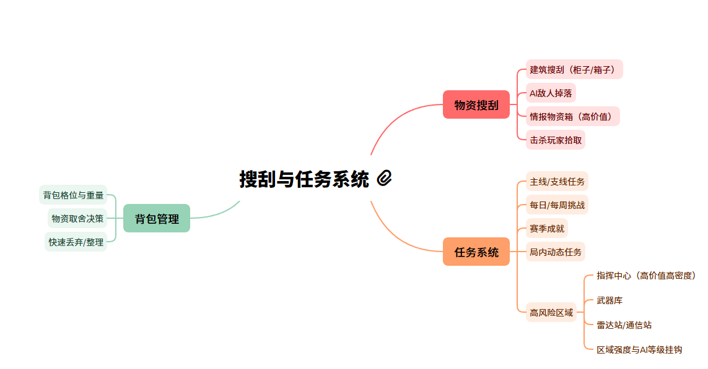
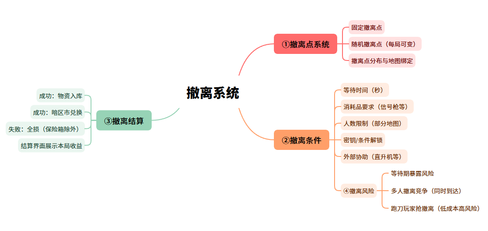
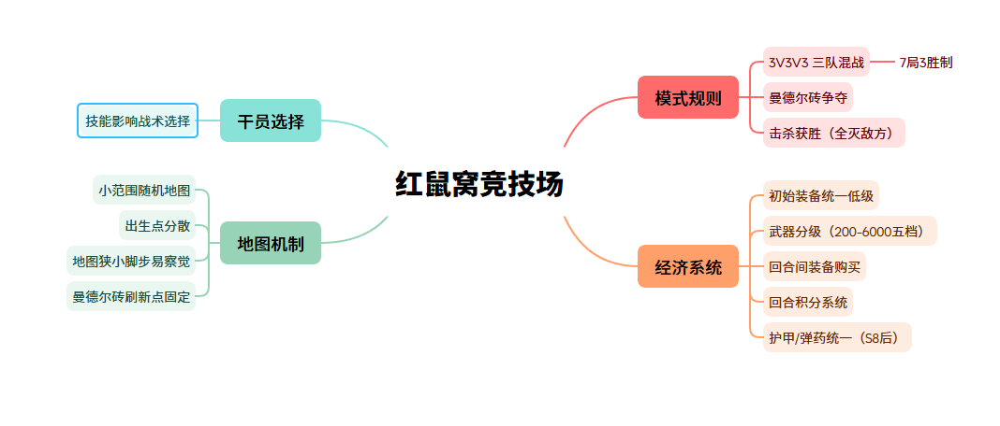

| 游戏名称 | 三角洲行动 |
|---|---|
| 游戏类型 | 搜打撤玩法 |
| 开发商 | 琳琅天上 |
| 发行商 | 腾讯 WeGame 平台 |

近未来现代战争，融合了特种部队作战题材的背景下，采用写实军事风。
本人在该模式中累计游玩 600+ 小时，达到最高段位，单账号资产破 10 亿。主玩航天基地地图，长期沉浸式体验"搜刮—交战—撤离"的核心循环机制。在多次对局中观察到，玩家在进入撤离点后的等待时段是心理紧张度最高的节点。这一设计并非单纯用倒计时制造压力，而是通过场景信息不完全与沉没成本压力，使玩家在"拉闸时间"内持续处于高风险决策状态。这种紧张感是玩家持续游戏的核心驱动力之一，大部分玩家并非为"获胜"本身买单，而是为"高风险决策下的肾上腺素体验"付费。
而在付费设计上，分为刀皮、枪皮、人物皮肤（外观类道具）与保险箱（功能类道具）。在功能类道具影响游戏平衡上，付费主要用于降低装备损失风险，而非直接购买数值优势。结合自身 700+ 元的付费行为观察，玩家愿意为'降低风险'而非'变强'付费，说明本作在付费公平性与商业回报之间找到了较优平衡点。

1、三角洲行动是 Extraction Shooter 品类中目前国产化做得最完整的一档。高风险高回报的撤离机制带来的紧张感和叙事感，每一次成功撤离都是一段可以讲述的经历。
2、其枪械改装自由度高，给了玩家同一把枪不同的选择，让每把武器都能根据玩家的战术风格和战场需求进行个性化定制，从而在同种枪械中也能体现出明显的玩法差异。
3、充值不影响平衡性，付费内容仅限于外观，不构成付费即强的优势。
本部分数据综合以下渠道获取：
A. 专业媒体和数据分析报告机构
伽马数据（CNG）、艾瑞咨询、中国音数协游戏工委（GPC）、Sensor Tower、data.ai（原 App Annie）、Newzoo、点点数据、交银国际研报、华盛通研报等，提供行业宏观数据与权威报告支撑。
B. 第三方数据监测平台
七麦数据、点点数据、FoxData 等，提供下载量估算、收入预估及排行榜趋势等实时监测数据。
C. 玩家社区与舆论阵地
国内主要玩家聚集平台包括 B站、TapTap、App Store 评论区、百度贴吧、NGA 论坛、Steam 社区等，用于获取玩家真实口碑与核心关注点。
D. 搜索引擎指数
百度搜索指数、B站热搜榜、知乎热榜、抖音话题数据等，用于衡量游戏的社会关注度与话题热度变化趋势。
游戏自 2024 年 12 月登陆 Steam 平台以来（主机版 2025 年 8 月上线），端游下载量整体呈爆发增长、赛季驱动叠加主机扩容趋势，各平台表现如下：
| 维度 | 数据 |
|---|---|
| Steam 累计下载量 | 截至 2025 年 8 月 11 日，Steam 平台累计下载 1230 万次，平均游戏时长 41.3 小时，好评率 61.5%（Sensor Tower 旗下 Video Game Insights，2025 年 8 月） |
| WeGame 平台 | 腾讯自有 PC 平台同步发行，作为国内端游核心分发渠道之一，与 Steam 形成双平台覆盖（具体下载量未公开披露） |
| 官网独立客户端 | 官方提供独立启动器下载，覆盖非 Steam/WeGame 用户 |
| 主机平台拓展 | 2025 年 8 月 19 日登陆 PlayStation 5 与 Xbox Series X|S |
| 网吧渠道 | 顺网星研社网吧游戏热力榜：2024 年 Q4 位居 Top 5；2025 年 2 月首次升至第 3 名，2–6 月连续稳居第 3；2025 年 8 月超越《无畏契约》攀升至第 2 名，9 月周年庆期间成为国内射击品类最火端游（顺网星研社 / 游戏日报） |
| Steam 同时在线峰值轨迹 | 2025 年 9 月 6 日峰值 21.3 万（主机版上线后拉动）；S8「蝶变时刻」赛季（2026 年 2 月）峰值 14 万，杀入 Steam 热门榜前五（仅次于 PUBG、CS2 等）；2026 年 6 月回稳至约 3.4 万–7.8 万同时在线（SteamDB） |
| 关键节点峰值 | 主机版上线（2025 年 8 月）：同时在线从不足 10 万跃升至 21 万+；S5 赛季（2025 年 7 月）、S6 周年庆（2025 年 9 月）均推动 PC 端活跃显著拉升；S8 赛季联合 xQc、shroud 等顶流主播的 Streamer Week 营销活动带来大量海外新增 |
游戏自公测以来收入持续走高，已成为腾讯收入第二高的手游产品（仅次于《王者荣耀》），预估收入及排行榜变化如下：
| 维度 | 数据 |
|---|---|
| 首季收入（2024Q4） | 腾讯财报披露，移动端 + PC 端单季总收入超 10 亿人民币（腾讯 2024Q4 财报电话会议） |
| 2025 年 1 月 | 交银国际估算流水约 3 亿元，S3 赛季最高登畅销榜第 3 名（交银国际研报，2025 年 2 月） |
| 2025 年 4 月 | 月流水超 3.5 亿元，位列 iOS 游戏畅销榜第 6 名（华盛通研报，2025 年 5 月） |
| S6 赛季峰值（2025 年 9 月） | 周年庆赛季直接登顶 iOS 畅销总榜，预估周收入达 1301.5 万美元（七麦数据）；同期官宣日活突破 3000 万 |
| S7 赛季峰值（2025 年 11 月） | 全新「阿萨拉」赛季上线后日流水创上市新高，连续两日问鼎全球手游畅销榜冠军；当月全球移动端收入近 8000 万美元（约 5.8 亿人民币），环比增长 12%（Sensor Tower，2025 年 12 月） |
| 累计收入 | 截至 2025 年 11 月底，全球移动端累计收入突破 4.5 亿美元（超 30 亿人民币），计入 PC 端和国内安卓后实际收入远超此数（Sensor Tower） |
| 海外首月 | iOS + Google Play 双平台预估总收入 2300 万美元，日本 ARPPU 值最高达 $48.7（Sensor Tower / Newzoo） |
| 国际服 | 2025 年 4 月 22 日公测，首月流水估算 3000–4000 万元（华盛通研报） |
收入峰值节点分析：收入峰值与赛季更新、限定礼包上线时间高度吻合。S7「阿萨拉」赛季上线当天即创日流水纪录，说明赛季通行证是收入核心驱动。首期通行证销售转化率达 14.3%，高于行业优秀水平（12%）。
品类对比：与同期竞品相比，《三角洲行动》首月流水约为《暗区突围》同期（2022 年 7 月，iOS 首月约 8000 万）的 1.0–1.5 倍，且凭借三端互通优势，持续领跑全球射击手游赛道，已成为腾讯收入第二高手游。
游戏自公测以来各平台搜索指数变化如下：
| 维度 | 数据 |
|---|---|
| 百度搜索指数 | 2025 年 5 月至 2026 年 5 月数据：指数整体稳定，存在明显周期性波动；高点集中在周末、周四（小版本更新日）以及每 2–3 个月一次的大版本更新，说明社群热度稳定、玩家群体相对固定（系统拆解案引用百度指数数据，2026 年 5 月）；但 S9 赛季（2026 年 4 月后）移动端环比下跌约 24%，热度出现下滑迹象（网易新闻，2026 年 6 月） |
| 比心平台 | 截至 2025 年 2 月，搜索指数突破 661.5 万，相关交易量环比增长 35%，增速为平台平均水平的 8 倍 |
| 抖音话题 | 平台「三角洲行动」话题总播放量达 380 亿次 |
| B站表现 | 官方账号发布视频中，3 个超 500 万播放、50 个超 100 万播放；名字含「三角洲行动」的 UP 主近千位，每日开播主播数千位；游戏相关话题累计上榜多次，高热话题主要包括「烽火地带玩法」「枪械改装教程」「撤离跑刀」「与暗区差异」等 |
| 知乎热榜 | 累计上榜数次，讨论焦点集中在「玩法设计与平衡性」「赛季更新评价」「外挂反制作战」「运营争议（如 2025 年 10 月撤离人数限制事件）」等 |
| SteamDB | PC 端同时在线约 3.4 万–7.8 万，24 小时峰值约 12.9 万，30 天平均在线约 7 万以上（SteamDB，2026 年 6 月）；历史峰值约 24 万（2025 年 9 月） |
综合多平台评分及用户评论，当前口碑状况总结如下：
| 平台 | 评分 | 评价基数 | 趋势说明 |
|---|---|---|---|
| App Store | 4.6 / 5 | 293 万条评分 | 近半年评分稳定，优化与跨端体验获持续好评 |
| TapTap | 5.2 / 10（当前） | 4.1 万+ 条评价 | 评分呈明显下滑趋势，早期高点约 8.3 分（2026 年 3 月前），核心玩家对撤离挫败感、ELO 匹配机制、哈弗币回收等问题差评集中，导致评分持续走低 |
| Steam | 褒贬不一 | 5.3 万+ 条评价 | 评论区两极分化，Bug、优化、外挂为主要槽点 |
| 抖音精选 | 8.2 / 10 | 海量玩家打分 | 内容生态完善，攻略/集锦丰富，休闲玩家评分友好 |
正面：
"画面音乐不错，烽火地带撤离成功的肾上腺素飙升感太爽了。"—— TapTap 玩家（2026 年 4 月）
"终于在手游上玩到了当年的感觉，画质真的顶，枪械手感是目前手游里最好的。"—— App Store 玩家
"搜打撤玩法太上头了，每局都是新故事，国产射击终于有能打的了。"—— B站评论区高赞
负面：
"撤离人数限制 5 人、强制厮杀那次操作太恶心了，三天五十万差评不是没原因的，策划长点心吧。"—— TapTap 玩家（2025 年 10 月事件）
"希望官方重视反外挂，PC 端透视自瞄满天飞，不然真的活不过半年。"—— Steam 社区
"新手上路就被大佬炸鱼，ELO 匹配机制劝退萌新，单排环境太恶劣了。"—— TapTap 玩家
整体口碑偏正面，核心玩家粘性强，但负面争议持续发酵影响公众评价。App Store（4.6 分）和抖音精选（8.2 分）等泛用户平台评分较高，说明轻度玩家和内容消费者体验良好；TapTap（5.2 分）和 Steam（褒贬不一）等核心玩家平台评分持续走低，反映外挂治理、匹配公平性、运营决策等深层问题未得到根本解决。2025 年 10 月的"共享监狱"事件是口碑重要分水岭，官方虽及时道歉回调，但信任修复仍需时间。S9 赛季（2026 年 4 月后）搜索指数环比下滑 24%，Steam 同时在线从峰值 24 万降至约 7 万，提示游戏已进入成熟期，需持续运营创新维持热度。
撰写说明：重点描述游戏的核心玩法体验闭环和相关系统，其他核心亮点系统或玩法放后面。
战前整备：玩家从仓库中选择武器、配件、消耗品、防具，组成一套带入战局的装备。装备价值越高，潜在收益越大，但失败成本也越高。
进入战局：通过空中投放进入地图。
搜刮与任务：在地图中探索建筑、击杀 AI 敌人、搜索物资箱，获取武器、配件、消耗品和高价值物资；同时推进赛季任务或局内目标。
遭遇与战斗：与其他玩家或小队发生交火，胜者获得败者物资。
前往撤离点：携带搜刮到的物资前往地图撤离点，撤离有等待时间，期间极易被其他玩家伏击。
撤离判定：成功撤离则本局所有搜刮物资存入仓库；撤离失败则本局带入的装备和搜刮的物资全部丢失（保险箱物品除外）。
结算与再投入：结算界面展示本局收益，玩家用收益购买装备，随即投入下一局。

玩家在进入机密以上战局前，必须从仓库中手动装配本局带入的装备，无法"空手进入"；
带入装备的价值由玩家自行决定：轻装跑刀（低成本高风险高机动）vs 全装大佬（高成本高风险高收益）；
保险箱中的物品在撤离失败时不予扣除，是重要的风险控制手段；
配装方案支持多套保存，玩家可针对不同地图或战术风格预设不同方案，局外快速切换。
战前整备是经济系统与战局体验之间的桥梁，它将玩家在局外积累的财富转化为战局内的能力和风险。没有这个环节，经济系统就失去了意义；没有经济系统，整备环节就失去了策略深度。
建立风险预期：让玩家在进局前就明确本次行动的"赌注"大小；
支持多样化玩法：轻装跑刀、全装攻坚、中立支援等不同配装对应不同战术；
与经济系统形成闭环：整备消耗哈弗币 → 成功撤离获得更多哈弗币 → 购买更好装备 → 更高风险更高回报。
正面：配装自由度极高，玩家可以根据自己的战术偏好和当前经济状况灵活调整；多套方案保存功能大幅降低了重复整备的时间成本；
负面：对于新手玩家，不熟悉武器配件系统会导致整备阶段耗时较长，且容易"带错装备"造成不必要的损失。
| 优点 | 缺点 |
|---|---|
| 配装自由度极高，支持个性化战术 | 新手门槛高，配件系统学习成本大 |
| 风险自定，轻装/全装各有乐趣 | 装备价值信息不透明，新手难以判断"这把枪值不值得带" |
| 多套方案保存，降低重复操作成本 | 保险箱格位有限，高级保险箱需付费或赛季获取 |

地图中物资随机分布，但高价值区域（如大坝行政楼、总裁室）的物资密度显著更高，同时也更危险；
击杀 AI 敌人有概率掉落武器和配件，击杀真实玩家则可拾取对方全部带入装备；
任务目标分布在地图各处，完成可获得哈弗币、经验值、限定奖励；
背包有重量和格位上限，玩家需要不断做出"带什么、丢什么"的取舍决策，这是搜刮阶段的核心策略点。
搜刮与任务是战局内最主要的收益来源，也是玩家在局内停留时间最长的阶段。它承担了"积累感"的营造，让玩家在决定撤离之前已经投入了大量时间和情绪。
制造"再搜一点"的沉没成本心理：玩家搜得越多，越不愿意空手撤离，越容易陷入危险；
支持不同游玩方式：喜欢探索的玩家可以慢慢搜，喜欢战斗的玩家可以主动找人打；
与撤离机制形成张力：搜得越多，撤离时的紧张感越强，成功撤离的成就感也越大。
正面：搜刮过程有探索感，高价值物资的"发现瞬间"有强正反馈；任务目标给探索提供了清晰的方向感；
负面：背包管理较为繁琐，移动端尤其明显；部分物资的实用价值低，搜到后"食之无味弃之可惜"。
| 优点 | 缺点 |
|---|---|
| 物资分布有层次，高风险区域高回报 | 背包 UI 在移动端操作不够顺畅 |
| 任务目标给探索提供方向感 | 部分物资实际价值低，占用背包空间 |
| "发现高价值物资"的正反馈极强 | AI 敌人强度曲线不够平滑，新手区域也可能遇到高强度 AI |

每张地图设有多个撤离点，部分撤离点有额外条件（如消耗一个信号枪、等待 30 秒、有人在外开启等）；
撤离点不作为默认开启，部分需要在地图内寻找撤离密钥或完成特定条件；
撤离等待期间玩家无法快速移动，极易被其他玩家伏击，这是游戏最著名的"收割时刻"；
成功撤离后，携带物资自动存入仓库，暗区币按比率兑换为哈弗币；
撤离失败时，带入装备和搜刮物资全部丢失，仅保险箱内物品保留。
撤离系统是整个体验闭环的核心判定点，也是 extraction shooter 品类的标志性设计。它把前面所有积累——搜刮的物资、完成的任务、击杀敌人获得的装备——压缩到一个"赌一把"的瞬间。
制造紧张感：撤离等待期是游戏心理压强最高的时刻，玩家从"探索模式"切换为"高度警觉模式"；
创造社交对抗机会：撤离点是玩家交汇的高频区域，大量 PVP 发生在此处；
赋予成功以意义：如果没有撤离判定，"搜刮"就只是单机捡垃圾；撤离失败的风险让每一次成功都有叙事价值。
正面：成功撤离的成就感极强，是玩家在社区分享故事的主要素材；撤离点的不确定性和伏击风险让每一局都充满变数；
负面：撤离失败后的"全损"体验极为挫败，连续失败容易导致玩家流失；部分地图撤离点分布不合理，导致"跑图"时间过长。
| 优点 | 缺点 |
|---|---|
| 撤离等待机制制造了极强的心理张力 | "全损"挫败感强，连续失败易劝退 |
| 撤离点是天然的 PVP 热点，社交对抗丰富 | 部分地图撤离点分布不均，跑图时间过长 |
| 保险箱机制缓解了"全损"的极端挫败感 | 撤离人数限制等运营决策曾引发大规模差评（见口碑章节） |
除了核心体验闭环涉及的玩法之外，以下对游戏中具有代表性的特色玩法系统进行单独分析。

基本规则：
3V3V3 三队混战：三支 3 人小队在同一张小地图中对抗，目标为存活到最后或成功破译曼德尔砖；
7 局 3 胜制：率先赢下 3 个回合的小队获得最终胜利；
曼德尔砖争夺：地图中存在"曼德尔砖"，拾取后需持续破译，破译成功直接赢得该回合；破译期间若被击杀则砖掉落，对方可继续破译；
击杀获胜：将本回合所有敌人击杀同样直接赢得该回合。
经济机制：
初始装备统一低级：所有玩家开局装备相同且较低，保证公平起点；
回合积分系统：通过击杀敌人、回合胜利获得积分，用于后续回合购买更好的装备；
武器分级（S8 赛季优化后）：200–6000 分为五个档位，每个档位对应不同强度的武器和护甲。取消纯手枪局，第一回合即可在"冲点""架枪""近战爆发"三种策略方向中自由选择；
护甲统一（S8 赛季后）：除第一局外，后续所有对局统一配备 4 级护甲，弹药统一为 4 级（狙击枪除外），最大限度平衡经济因素对比赛的影响。
地图机制：
小范围随机地图：每局从多张小地图中随机选取，如航天基地：总裁区、巴克什：巴别塔、长弓溪谷的雷达站等，均为小范围近战地图；
出生点分散：三支队伍出生在不同点位，开局即进入对抗节奏；
地图狭小：脚步易被察觉，拾取曼德尔砖需格外小心。
红鼠窝竞技场是三角洲行动中独立于烽火地带和全面战场之外的第三种竞技模式。它兼具竞技公平性与战术多样性，为偏好快节奏、短对局 PVP 体验的玩家提供了"不需进烽火地带冒险也能享受高强度对抗"的选择。
填补快节奏 PVP 空白：烽火地带节奏慢、风险高，全面战场 64 人规模大，红鼠窝提供了"3 分钟一回合、15 分钟一局"的短平快体验；
降低参与门槛：无需自己带装备进局，不怕"全损"，对所有玩家公平起步；
强化战术与团队协作：三队混战的非对称局面（两方交战可能被第三方渔翁得利）天然产生复杂的战术博弈；
为人员差异化提供舞台：小范围作战充分放大了不同干员技能的战术价值。
正面：
节奏极快，"一回合 3 分钟"的高度浓缩对抗让玩家始终处于高投入状态；
三队混战的不确定性带来丰富的戏剧性（"鹬蚌相争，渔翁得利"是经典场面）；
S8 赛季武器分级优化和护甲统一后，公平性大幅提升，经济因素对胜负的影响显著降低；
无需担心"撤离失败全损"，纯粹享受枪战对抗的乐趣。
负面：
单排玩家匹配到三排黑车队时体验极差，配合劣势明显；曼德尔砖破译时间过长，破译期间几乎成为"活靶子"，容易导致"拿砖即送"的尴尬局面；早期版本经济滚雪球效应明显，连败队伍后期装备差距悬殊，S8 赛季护甲统一后才有所改善；地图池有限，长期游玩可能产生审美疲劳。
| 优点 | 缺点 |
|---|---|
| 三队混战产生丰富战术博弈，体验独特 | 单排 vs 三排黑车体验差距大 |
| 短平快节奏，适合碎片化时间游玩 | 曼德尔砖破译时间过长，拿砖风险过高 |
| 无需带装备、无全损压力，参与门槛低 | 地图池有限，长期游玩重复感强 |
| S8 赛季护甲/弹药统一后公平性大幅提升 | 非主要模式，玩家基数可能随版本波动 |
| 干员技能在小范围作战中被充分放大 | 早期版本经济滚雪球严重，老玩家印象仍存 |
① 《三角洲行动》将搜打撤这一在国外由《逃离塔科夫》验证过的品类，进行了真正适合国内玩家习惯的本土化设计。
烽火地带模式中的"搜刮—战斗—撤离"闭环，在保留核心游戏乐趣的同时，通过三项关键设计显著降低了硬核门槛：
保险箱机制：撤离失败时保留部分关键物资，缓解了"全损"的极端挫败感，避免玩家因连续失败直接退坑；
匹配分级与新手保护：通过 ELO 优化和独立新手匹配池，减少新手遭遇老手"炸鱼"的现象，保护初期体验；
虚幻引擎 5 的移动端优化：让更多中低配设备玩家也能流畅参与，大幅扩展了潜在玩家基数。
② 在国产游戏普遍"付费即强"的环境下，三角洲行动的付费设计具有罕见的克制。双货币分离设计：哈弗币（局内获取，驱动经济循环）、点券（现实货币，仅限外观/通行证），三者边界清晰，付费不影响平衡性。赛季通行证是收入核心但不提供数值优势：通行证的奖励以哈弗币、外观、配件为主；首期通行证销售转化率达 14.3%，高于行业优秀水平（12%），说明玩家对"付费买便利而非 buy power"的模式接受度较高。这种付费设计在短期收入上可能不如"卖数值"激进，但在长期留存和口碑保护上具有显著优势。
③ 红鼠窝竞技场采用三支 3 人小队同场对抗的非对称对局设计，在"并非 1V1 公平对决"的前提下，反而创造出独特的竞技深度。每支队伍起点完全相同，公平性由系统保障而非装备差异决定。非对称性体现在战术层面：两支队伍交火时，第三方可以选择伺机收割，也可以选择静默发育、最后时刻介入。这种信息不完全、选择开放的博弈结构，使每一局红鼠窝的进程都不相同，远超传统对称对局的战术厚度。相比传统 5V5 或 1V1 对决，红鼠窝的竞技性不在于"操作碾压"，而在于把握时机，给出雷霆一击的战术技巧。
外挂治理与匹配公平性是目前最致命的短板——PC 端透视/自瞄反馈持续存在，ELO 机制导致新手"炸鱼"现象严重，单排环境恶劣。这个问题直接威胁游戏长期留存，且《暗区突围》的前车之鉴就在眼前。
建议官方建立定期的"策划有话说"沟通机制（可结合赛季更新节点，每 6–8 周发布一次），以视频或长图形式，主动向玩家说明：
近期玩家反馈的核心问题，官方已注意到哪些、正在处理哪些、哪些因技术或平衡原因暂时无法调整；
未来 1–2 个赛季的更新方向，让玩家对游戏走向有稳定预期，减少"猜策划意图"的舆论真空；
外挂治理进展，定期公布封禁账号数量、反作弊技术升级进度，重建玩家对官方治理决心的信任。
《三角洲行动》是近年来国产射击品类中最具系统深度和技术野心的作品。它成功地将经典 IP 情怀、次世代技术底座、以及搜打撤这一小众但高粘性的品类进行了本土化重构，并通过三端互通和双模式并行建立起显著的竞争壁垒。
然而，游戏目前正处于从"爆发增长"向"长期留存"过渡的关键节点。S9 赛季搜索指数环比下滑 24%、Steam 同时在线从峰值 24 万回落至约 7 万，提示核心玩家群体的疲劳感正在累积。外挂治理和匹配公平性是决定这款游戏能否跨越"三年生命周期"的两道坎。若能在这两点上拿出令玩家信服的实质性动作，三角洲行动完全有潜力成为下一个国产射击的长线标杆。